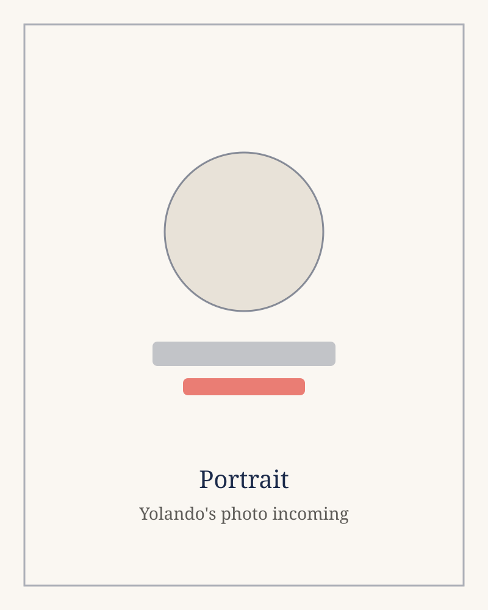
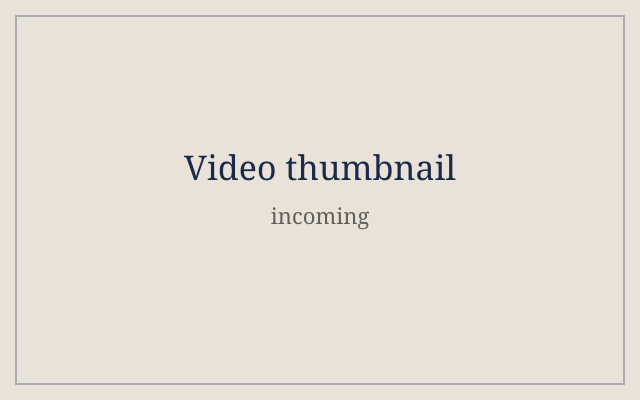
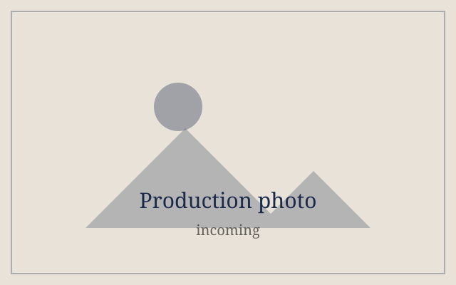
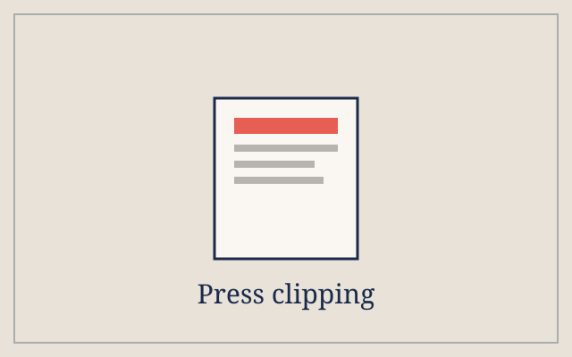
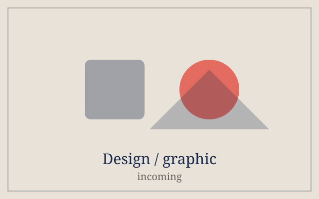

Coaching Online
Coaching, advising, and training — that's who I am.
Welcome to my page
Virtual Creative Entrepreneur
Coach Business Owner Producer
Helping event planners, coaching clients, and aspiring hosts show up with confidence — on camera, on stage, and online. sample — replace with her real line
Heyyyy! Welcome to my page. Here are a few milestones of my life and career.

sample — photo incomingI'm from East Saint Louis, Illinois. In 2000 I went back to school — LA Valley College while waiting tables in Beverly Hills, an ASU member and Commissioner of Environmental Affairs. I transferred to Cal State Dominguez Hills on a Presidential Scholarship, and there I began taping my talk show, Every Way Woman, from home. I went on to earn my MA at Cal Poly Pomona.
A studio staffer once told me, "this is not your studio." So I built my own: Inavizion Media opened in 2015, and My Creative Space followed three years later.
"If any of you lacks wisdom, you should ask God, who gives generously to all without finding fault."
— James 1:5
In 2004, I was a married student — and I created a talk show for everyday women. I drink tea. And I had one job to do as the ShowRunner —
Be on time.
Coaching, advising, and training — that's who I am.
I love video, audio, and tech production.
I treated my server job like a small business — and formed my first production company in college.
sample content — replace with Yolando's resume
Sample entry: built and run a creative studio supporting everyday women entrepreneurs.
Sample entry: founded a media company producing talk shows, coaching, and digital content.
Sample entry: created and host a talk show for everyday women, taped from home.
Sample entry: replace with Yolando's real education and credentials.
Videos, production photos, press, and design work — gathered over a career behind and in front of the camera.


sample — photo incoming
sample — photo incoming
sample — photo incoming
sample — photo incoming

sample — clipping incoming
sample — clipping incoming

sample — graphic incoming
sample — graphic incoming
sample — video incoming
sample — photo incoming
sample For entrepreneurs on a budget who need to grow with tech they can actually afford.
A program to help entrepreneurs on a budget grow with accessible technology.
sample For aspiring hosts, speakers, and creators who want real camera confidence.
Teaching the art of hosting — talk skills for the camera, the mic, and the stage.
sample For entrepreneurs launching online who want a website without the agency price tag.
Website and WordPress templates for entrepreneurs — launch online with confidence.
As seen in real Renew Magazine · Renew Women's Expo
"I loved working with yolando..."
"She made being on camera feel easy — like talking to a friend."
"The coaching changed how I show up for my business."
Talk Show Land — Changing Conversations, Creating Dialogue.
sample Prefer to book a call? Calendly link goes here